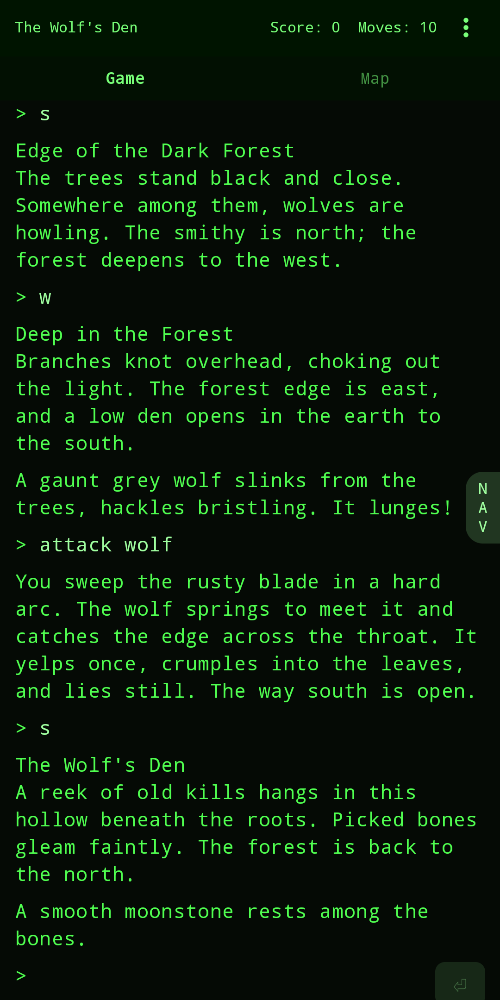
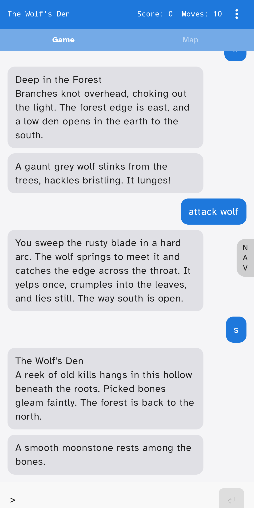
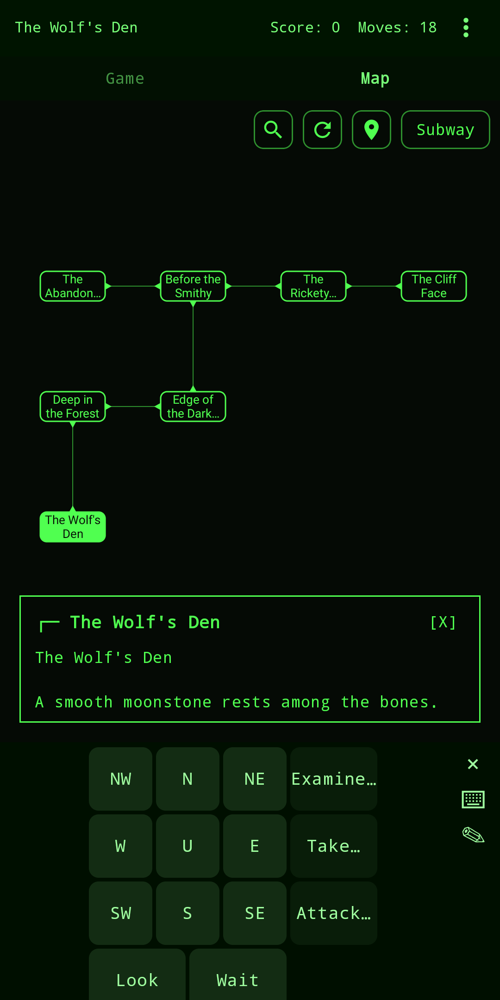
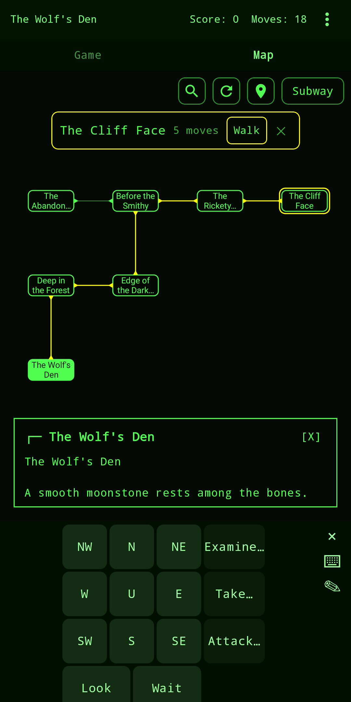
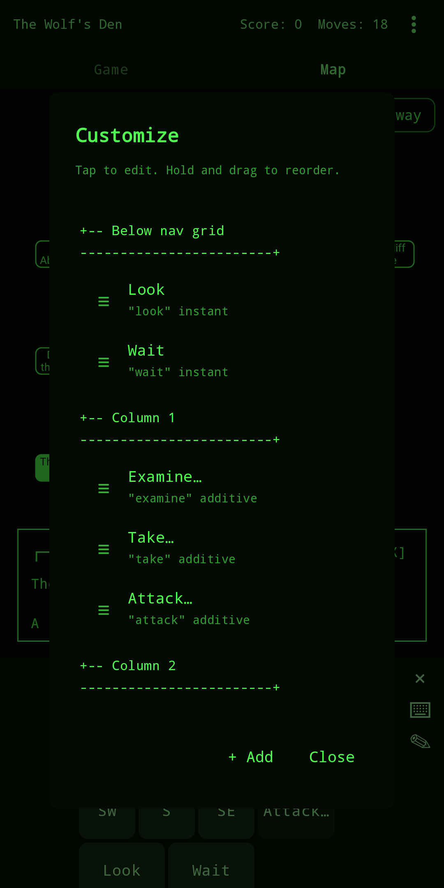
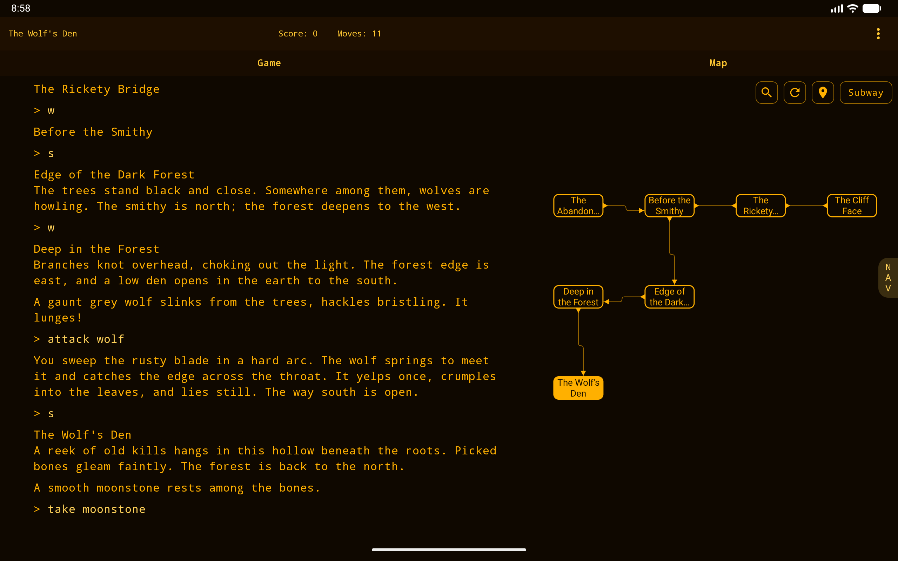
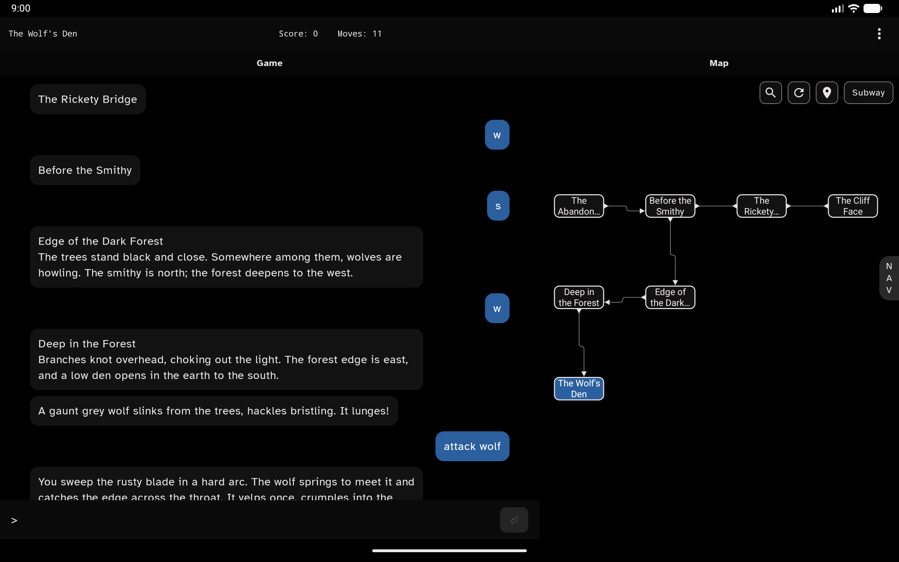

IFMachine
Play interactive fiction and classic text adventures, including Zork.





IFMachine is an interactive fiction player, bringing you the text adventures, old and new, that are the foundation of modern role-playing games. It comes with the complete Zork trilogy built in, and you can browse and download hundreds more freely available works from the interactive fiction community, then play them all on your phone with a reading-first interface built for touch.
- Includes the complete Zork I, II, and III trilogy, ready to play out of the box.
- Plays Z-machine and Glulx story files, the two most widely used interactive fiction formats.
- Browse and download hundreds more works to your library.
- An automatic map which updates as you explore, with search and auto-navigation to rooms you have visited.
- Read stories aloud for audiobook-style listening.
- Customizable tap controls. Common commands are one tap away.
- A clean, reading-focused interface with adjustable text.
- Retro terminal and modern reading themes.
- Save and restore your progress at any point.
- Optional cloud save to your own Google Drive, so you can pick up where you left off across devices.
Interactive fiction has a decades-long history and a thriving modern community publishing new works every year. IFMachine is built to play them on the device in your pocket.


What's new in 1.2.1
- Maps now work in many Glulx games.
- IFMachine attempts to learn how to map new games.
- Edit a room's exits from the map to lock one, remove one, or change the command it walks with.
- Library rows show cloud save status.
- Implemented missing special keys support in Z-Machine games.
- Bug fixes.
- Fixed a couple memory leaks.